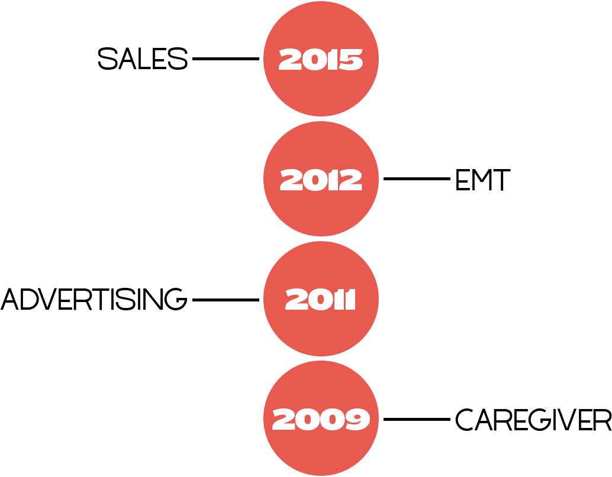

Working in many different fields over the last ten years, I’ve formed relationships that have enabled me to understand human interaction on a deeper, more intimate level. Having empathy, patience, humility, and an open mind is critical during every stage of the design process. Always be curious and always be hungry to learn more.
